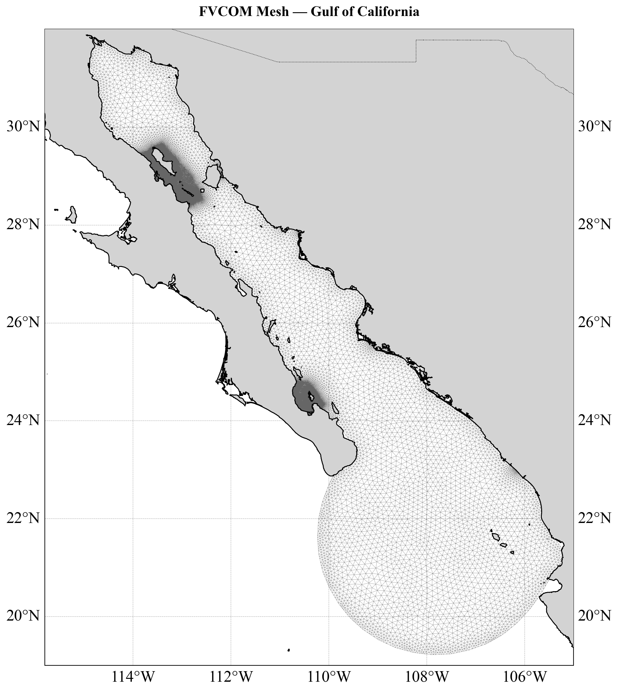
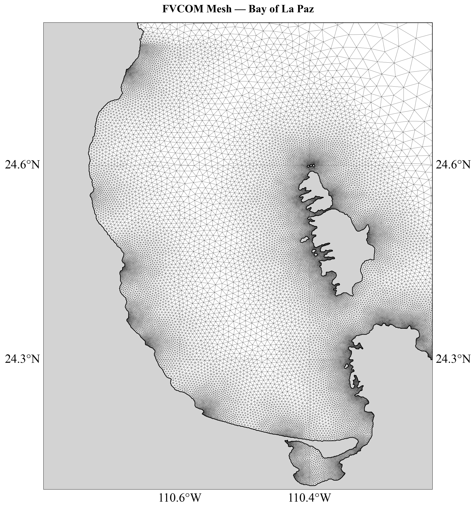

Modelación numérica
costera y marina
Simulación de la dinámica oceánica del Golfo de California mediante el modelo FVCOM, con mallas no estructuradas que capturan la complejidad de costas, islas y batimetría.
Dinámica de corrientes
Corrientes del Golfo de California
Simulación de corrientes superficiales calculadas con el modelo numérico FVCOM (Finite Volume Community Ocean Model). El modelo resuelve las ecuaciones de movimiento del océano sobre una malla no estructurada de elementos triangulares, permitiendo representar con precisión la circulación en zonas costeras complejas.

Discretización del dominio
Malla no estructurada FVCOM
FVCOM utiliza mallas de elementos finitos triangulares que se adaptan a geometrías costeras irregulares. La resolución aumenta en zonas de interés como bahías, lagunas y canales, sin sacrificar eficiencia computacional en el dominio abierto.

